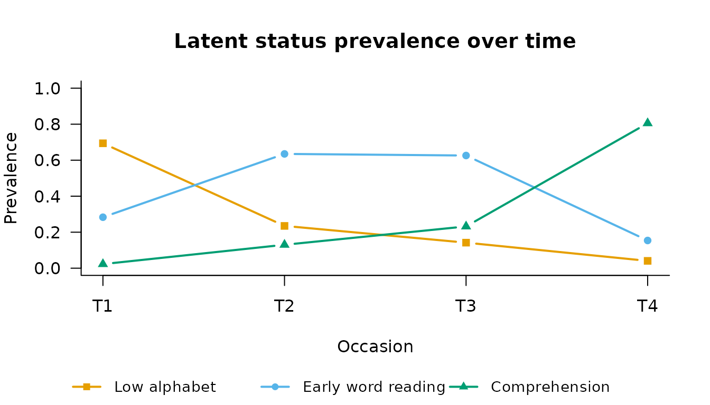

Latent transition analysis (LTA) is the longitudinal extension of LCA in which cases can move: at each occasion every case occupies a latent status, and the model estimates both what the statuses look like (measurement) and the probabilities of moving between them from one occasion to the next (transitions) (Collins & Lanza, 2010, ch. 7–8).
The data: learning to read, kindergarten to first grade
ecls_reading holds 3,575 children from the Early
Childhood Longitudinal Study, Kindergarten Class of 1998–99 (ECLS-K),
assessed four times — the fall and spring of kindergarten and the fall
and spring of first grade — on whether they had mastered five reading
skills: letter recognition, beginning sounds, ending sounds, sight words
and words in context. The skills are acquired roughly in that order,
which is what makes these data a textbook case for a
stage-sequential LTA (Kaplan, 2008): the latent statuses are
stages of learning to read, and children are expected to move forward
through them.
data(ecls_reading)
items <- ecls_reading[, -1] # the 20 indicators; column 1 is poverty
round(colMeans(items), 2)
#> letters_t1 beginning_t1 ending_t1 sight_t1 context_t1 letters_t2
#> 0.64 0.32 0.18 0.03 0.01 0.90
#> beginning_t2 ending_t2 sight_t2 context_t2 letters_t3 beginning_t3
#> 0.73 0.53 0.15 0.05 0.93 0.82
#> ending_t3 sight_t3 context_t3 letters_t4 beginning_t4 ending_t4
#> 0.68 0.27 0.10 0.97 0.93 0.90
#> sight_t4 context_t4
#> 0.81 0.45Mastery of every skill rises from occasion to occasion, and at any
one occasion the skills are ordered: almost everyone knows their letters
by the spring of kindergarten, while reading words in context is still
rare a year later. The indicator columns are already in the wide,
occasion-major layout fit_lta() expects — the five items at
t1, then the five at t2, and so on.
Fitting the LTA
fit_lta() needs the number of statuses and how the
columns divide into occasions. Three statuses is the choice the
published analyses of these data settle on, and
compare_longitudinal() can be used to check it. By default
the item-response probabilities are held equal across occasions
(measurement_invariance = "full"), which is what makes “the
same status at different times” a meaningful phrase:
fit <- fit_lta(items, n_statuses = 3, times = 4, measurement = "binary",
n_init = 50, random_state = 7)
fit
#>
#> =========================================================
#> LATENT TRANSITION ANALYSIS
#> =========================================================
#> Latent statuses : 3
#> Items x Occasions : 5 x 4
#> Item parameters : binary, held equal across occasions
#> Transitions : 3 tables, one per pair of occasions
#> Converged : TRUE (in 31 iterations)
#> ---------------------------------------------------------
#> Log-Likelihood : -21794.40
#> Parameters : 35
#> AIC : 43658.80
#> BIC : 43875.16
#> SABIC : 43763.95
#> Rel. Entropy : 0.9038
#> Best solution : found by 50 of 50 starts
#> ---------------------------------------------------------
#> Latent status prevalences by occasion:
#> Status 1 Status 2 Status 3
#> T1 0.6940 0.2832 0.0228
#> T2 0.2350 0.6349 0.1301
#> T3 0.1419 0.6261 0.2320
#> T4 0.0407 0.1540 0.8053
#> =========================================================
#> Type summary(model) for transitions, measurement_summary(model) for items.Latent transition models have many local maxima, and the
Best solution line — every one of the 50 starts reached
this one — is the evidence that this is not one of them. When that count
is low, raise n_init; see
vignette("estimation").
What the statuses are
Status numbers are arbitrary labels. Read the item-response probabilities before naming them:
measurement_summary(fit)
#>
#> =========================================================
#> MEASUREMENT MODEL PARAMETERS (by occasion)
#> =========================================================
#> Held equal across occasions; one set shown.
#> =========================================================
#> MEASUREMENT MODEL PARAMETERS
#> =========================================================
#>
#> CATEGORICAL PROBABILITIES
#> Indicator | Overall | Class 1 | Class 2 | Class 3
#> ------------------------------------------------------------
#> letters@T1 | 0.860 | 0.505 | 0.994 | 1.000
#> beginning@T1 | 0.700 | 0.066 | 0.917 | 0.984
#> ending@T1 | 0.573 | 0.013 | 0.661 | 0.972
#> sight@T1 | 0.315 | 0.000 | 0.051 | 0.984
#> context@T1 | 0.152 | 0.000 | 0.001 | 0.509
#>
#> At the boundary: letters@T1 in class 3; sight@T1 in class 1; context@T1 in class 1. These probabilities have run to 0 or 1, so the class is defined partly by an item every case in it gives the same answer to, and their standard errors are not interpretable. There are two ways on: read it substantively, since an item every member of a class answers identically is often the finding rather than a fault; or, if that parameter needs a standard error, refit with a stronger prior than the default of 1 - `bayes_constants = list(categorical = 2)` - which holds the estimate off the edge at the cost of shrinking it slightly toward the item's marginal.
#> =========================================================The three statuses are three stages of learning to read:
- Low alphabet knowledge — about half know their letters and almost nothing beyond;
- Early word reading — letters and beginning sounds mastered, ending sounds coming, sight words not yet;
- Early reading comprehension — everything mastered except, for about half of them, words in context.
The At the boundary note is worth reading rather than
fearing. Nobody in the low-alphabet stage reads sight words or words in
context, and everyone in the comprehension stage knows their letters:
those probabilities are 0 and 1 because that is what the stages
are, not because the estimation went wrong. The note only
matters if a standard error for one of those cells is needed, and says
what to do then.
fit_lta() labels the statuses from most to least
prevalent at the first occasion, which here coincides with the
developmental order, so status 1 is the earliest stage and status 3 the
latest.
Prevalences and transitions
The two core quantities of an LTA are the status prevalences at each occasion and the transition matrices:
status_prevalences(fit)
#> Status 1 Status 2 Status 3
#> T1 0.69398810 0.2832223 0.02278957
#> T2 0.23497414 0.6348993 0.13012652
#> T3 0.14193267 0.6260555 0.23201187
#> T4 0.04073975 0.1539687 0.80529156
transition_matrix(fit)
#> $`T1 -> T2`
#> to
#> from Status 1 Status 2 Status 3
#> Status 1 0.3382359842 0.649248739 0.01251528
#> Status 2 0.0007449381 0.650709101 0.34854596
#> Status 3 0.0013783180 0.001451812 0.99716987
#>
#> $`T2 -> T3`
#> to
#> from Status 1 Status 2 Status 3
#> Status 1 0.596458646 0.401020704 0.00252065
#> Status 2 0.002268312 0.836829503 0.16090218
#> Status 3 0.002614106 0.004022732 0.99336316
#>
#> $`T3 -> T4`
#> to
#> from Status 1 Status 2 Status 3
#> Status 1 0.262665573 0.5045539603 0.2327805
#> Status 2 0.005135153 0.1314951800 0.8633697
#> Status 3 0.001051789 0.0001410658 0.9988071Rows are where children start, columns where they end up, so the
diagonal holds the probability of staying put. Seven in ten enter
kindergarten in the low-alphabet stage; by the spring of first grade
eight in ten are in the comprehension stage. Movement is almost entirely
forward — the cells below the diagonal are all near zero — and the
interval with the least movement is the middle one, the summer between
kindergarten and first grade, where 60% of the low-alphabet children and
84% of the early-word readers stay where they were. plot()
shows both views:
labs <- c("Low alphabet", "Early word reading", "Comprehension")
plot(fit, type = "prevalence", status_labels = labs)
Is the transition process the same at every interval?
transition_invariance = "full" forces one transition
matrix for all intervals; comparing it against the unrestricted model is
a likelihood-ratio test of a time-homogeneous process:
fit_hom <- fit_lta(items, n_statuses = 3, times = 4, measurement = "binary",
transition_invariance = "full", n_init = 50,
random_state = 7)
lr_test(fit_hom, fit)
#>
#> Likelihood-ratio test for nested models
#> ---------------------------------------------------------
#> Restricted : LL = -22935.6518 parameters = 23
#> Full : LL = -21794.4012 parameters = 35
#> -2 x diff : 2282.5012 df = 12 p = < 1e-16
#> The restriction is rejected: the full model fits significantly better.It is rejected decisively. That is the summer: a school year moves children forward at a rate a vacation does not, and one shared matrix cannot express it.
A stage-sequential restriction
If the stages are truly ordered, backward moves are impossible by
design and can be fixed at zero with forbidden_transitions,
which also saves their parameters:
forward_only <- matrix(c(0, 0, 0, # from Low alphabet: anything allowed
1, 0, 0, # from Early word: no return to Low
1, 1, 0), # from Comprehension: no return at all
3, 3, byrow = TRUE)
fit_fwd <- fit_lta(items, n_statuses = 3, times = 4, measurement = "binary",
forbidden_transitions = forward_only, n_init = 50,
random_state = 7)
c(unrestricted = fit$metrics$bic, forward_only = fit_fwd$metrics$bic)
#> unrestricted forward_only
#> 43875.16 43879.93The two BICs are almost tied, and the unrestricted fit is 40
log-likelihood units better for its nine extra parameters. The backward
transitions it estimates are tiny, but with a sample this size a handful
of children who look as though they slipped back is enough for the model
to want them. Whether those slips are real regression or measurement
noise — a child who knew ending sounds in the spring and missed the item
in the fall — is a question regular LTA cannot answer, because it has no
way to represent a stable difference between children that is not a
stage. That is what a random intercept adds; see
vignette("rilta").
A mover-stayer model
A mover-stayer model (Vermunt, 2004) adds a latent class above the chain: one group transitions freely (the movers) while the other is locked in place (the stayers). It asks whether there is a genuinely immobile group — here, children who do not progress at all across the two years:
fit_ms <- fit_lta(items, n_statuses = 3, times = 4, measurement = "binary",
mover_stayer = TRUE, n_init = 20, random_state = 7,
max_iter = 2000)
c(single_chain = fit$metrics$bic, mover_stayer = fit_ms$metrics$bic)
#> single_chain mover_stayer
#> 43875.16 43894.49The stayer class is small (about 6%) and buys too little likelihood for its three parameters: BIC prefers the single chain. On these data nearly everyone moves.
Poverty as a covariate
Covariates can predict the status children start in
(predictors_initial) and the transitions they make
(predictors_transition). One slope per covariate is shared
across origin statuses within each interval
(transition_effects = "common"), which is the well-behaved
specification; the alternative, a separate regression per origin, is
saturated and fails to converge usefully when transitions are
sparse.
fit_pov <- fit_lta(items, n_statuses = 3, times = 4, measurement = "binary",
predictors_initial = ecls_reading["poverty"],
predictors_transition = ecls_reading["poverty"],
n_init = 20, random_state = 7)
c(no_covariate = fit$metrics$bic, poverty = fit_pov$metrics$bic)
#> no_covariate poverty
#> 43875.16 43521.09Poverty improves BIC by some 350 points. One thing to check before
reading the coefficients: once covariates index the statuses,
fit_lta() no longer relabels them by prevalence, so the
numbering may differ from the fit above.
status_prevalences() says which is which —
round(status_prevalences(fit_pov), 3)
#> Status 1 Status 2 Status 3
#> T1 0.023 0.285 0.692
#> T2 0.133 0.643 0.223
#> T3 0.232 0.644 0.124
#> T4 0.819 0.147 0.034— here status 3 is the low-alphabet stage (the one 69% start in), status 2 early word reading and status 1 comprehension. The coefficients are multinomial logits against the last status, so with this labelling every contrast is relative to the low-alphabet stage:
lta_covariate_summary(fit_pov)
#>
#> =========================================================
#> LATENT TRANSITION MODEL - COVARIATE EFFECTS (logits)
#> =========================================================
#> Reference status: 3. Coefficients are contrasts against it;
#> exp(coefficient) is an odds ratio.
#>
#> PREDICTING LATENT STATUS AT THE FIRST OCCASION
#> Status Term Estimate SE z p OR
#> Status 1 Intercept -3.169 0.115 -27.47 < 1e-16 0.042
#> Status 1 poverty -2.088 0.574 -3.64 0.000273 0.124
#> Status 2 Intercept -0.677 0.040 -16.96 < 1e-16 0.508
#> Status 2 poverty -1.462 0.131 -11.17 < 1e-16 0.232
#>
#> PREDICTING TRANSITIONS
#>
#> [occasion 1 -> 2]
#> Status Term Estimate SE z p OR
#> to Status 1 Intercept -3.069 0.194 -15.86 < 1e-16 4.600000e-02
#> to Status 1 from:1 25.000 27.479 0.91 0.362944 7.200490e+10
#> to Status 1 from:2 9.371 1.204 7.78 7.03e-15 1.174187e+04
#> to Status 1 poverty -0.772 0.231 -3.35 0.000821 4.620000e-01
#> to Status 2 Intercept 0.979 0.052 18.73 < 1e-16 2.663000e+00
#> to Status 2 from:1 -0.755 32.634 -0.02 0.981532 4.700000e-01
#> to Status 2 from:2 5.988 1.190 5.03 4.84e-07 3.984350e+02
#> to Status 2 poverty -1.186 0.097 -12.26 < 1e-16 3.060000e-01
#>
#> [occasion 2 -> 3]
#> Status Term Estimate SE z p OR
#> to Status 1 Intercept -5.147 0.784 -6.56 5.21e-11 0.006
#> to Status 1 from:1 11.730 1.248 9.40 < 1e-16 124283.965
#> to Status 1 from:2 9.606 0.888 10.82 < 1e-16 14857.136
#> to Status 1 poverty -2.162 0.285 -7.60 3.06e-14 0.115
#> to Status 2 Intercept -0.030 0.089 -0.34 0.733 0.970
#> to Status 2 from:1 0.573 1.299 0.44 0.659 1.773
#> to Status 2 from:2 6.030 0.422 14.28 < 1e-16 415.774
#> to Status 2 poverty -0.920 0.149 -6.18 6.33e-10 0.399
#>
#> [occasion 3 -> 4]
#> Status Term Estimate SE z p OR
#> to Status 1 Intercept 0.276 0.161 1.71 0.0873 1.318
#> to Status 1 from:1 8.940 3.487 2.56 0.0104 7633.697
#> to Status 1 from:2 4.995 0.316 15.81 < 1e-16 147.640
#> to Status 1 poverty -0.929 0.210 -4.43 9.47e-06 0.395
#> to Status 2 Intercept 0.696 0.152 4.59 4.43e-06 2.006
#> to Status 2 from:1 -11.806 17.057 -0.69 0.4888 0.000
#> to Status 2 from:2 2.534 0.314 8.07 6.91e-16 12.598
#> to Status 2 poverty -0.108 0.198 -0.54 0.5860 0.898
#>
#> =========================================================Poverty lowers the odds of starting kindergarten beyond the
low-alphabet stage (OR 0.23 for early word reading, 0.12 for
comprehension), and lowers the odds of reaching comprehension in every
interval. The effect is sharpest over the summer, where a child in
poverty has 0.40 times the odds of reaching early word reading and 0.12
times the odds of reaching comprehension, relative to staying in low
alphabet. The from: terms are the origin-status intercepts
and are not of interest in themselves; the ones with enormous standard
errors belong to cells almost nobody occupies.
The same question in three steps
In the fit above the covariate and the statuses are estimated
together, so poverty has a say in what the statuses are: a
status is partly defined by who is poor. Usually that pull is small, but
nothing guarantees it, and it means adding or dropping a covariate can
quietly change the statuses whose prevalences you are comparing. The
stepwise estimators remove it. With n_steps = 3 (Vermunt,
2010; Nylund-Gibson et al., 2014) fit_lta() first fits the
LTA with no covariates, then assigns every child a status at every
occasion, and finally regresses those assigned statuses on poverty while
correcting for the children the assignment gets wrong. The statuses are
fixed before poverty is ever looked at.
fit_pov3 <- fit_lta(items, n_statuses = 3, times = 4, measurement = "binary",
predictors_initial = ecls_reading["poverty"],
predictors_transition = ecls_reading["poverty"],
n_steps = 3, n_init = 20, random_state = 7)
round(status_prevalences(fit_pov3), 3)
#> Status 1 Status 2 Status 3
#> T1 0.683 0.296 0.021
#> T2 0.220 0.635 0.144
#> T3 0.118 0.646 0.235
#> T4 0.033 0.146 0.821Here status 1 is the low-alphabet stage, status 2 early word reading and status 3 comprehension, so the contrasts below are all against comprehension:
lta_covariate_summary(fit_pov3)
#>
#> =========================================================
#> LATENT TRANSITION MODEL - COVARIATE EFFECTS (logits)
#> =========================================================
#> Reference status: 3. Coefficients are contrasts against it;
#> exp(coefficient) is an odds ratio.
#>
#> PREDICTING LATENT STATUS AT THE FIRST OCCASION
#> Status Term Estimate SE z p OR
#> Status 1 Intercept 3.253 0.152 21.42 < 1e-16 25.880
#> Status 1 poverty 1.929 0.704 2.74 0.00611 6.884
#> Status 2 Intercept 2.625 0.158 16.60 < 1e-16 13.798
#> Status 2 poverty 0.524 0.728 0.72 0.47112 1.690
#>
#> PREDICTING TRANSITIONS
#>
#> [occasion 1 -> 2]
#> Status Term Estimate SE z p OR
#> to Status 1 Intercept -11.134 32.993 -0.34 0.7358 0.000
#> to Status 1 from:1 15.268 33.004 0.46 0.6436 4275457.527
#> to Status 1 from:2 -10.283 111.444 -0.09 0.9265 0.000
#> to Status 1 poverty 0.749 0.349 2.15 0.0318 2.115
#> to Status 2 Intercept -9.962 21.492 -0.46 0.6430 0.000
#> to Status 2 from:1 15.086 21.510 0.70 0.4831 3562888.447
#> to Status 2 from:2 10.423 21.492 0.48 0.6277 33635.718
#> to Status 2 poverty -0.433 0.326 -1.33 0.1835 0.649
#>
#> [occasion 2 -> 3]
#> Status Term Estimate SE z p OR
#> to Status 1 Intercept -11.644 12.750 -0.91 0.36110 0.000000e+00
#> to Status 1 from:1 21.014 17.009 1.24 0.21666 1.337465e+09
#> to Status 1 from:2 -8.551 99.533 -0.09 0.93154 0.000000e+00
#> to Status 1 poverty 2.265 0.524 4.33 1.52e-05 9.630000e+00
#> to Status 2 Intercept -11.391 19.597 -0.58 0.56105 0.000000e+00
#> to Status 2 from:1 20.782 22.818 0.91 0.36241 1.060398e+09
#> to Status 2 from:2 13.008 19.597 0.66 0.50683 4.460691e+05
#> to Status 2 poverty 1.335 0.482 2.77 0.00567 3.798000e+00
#>
#> [occasion 3 -> 4]
#> Status Term Estimate SE z p OR
#> to Status 1 Intercept -6.648 1.186 -5.60 2.09e-08 0.001
#> to Status 1 from:1 6.494 1.201 5.41 6.41e-08 660.833
#> to Status 1 from:2 0.652 1.494 0.44 0.662675 1.919
#> to Status 1 poverty 0.914 0.252 3.63 0.000286 2.495
#> to Status 2 Intercept -14.972 65.353 -0.23 0.818802 0.000
#> to Status 2 from:1 15.470 65.354 0.24 0.812879 5230820.592
#> to Status 2 from:2 12.947 65.354 0.20 0.842966 419404.828
#> to Status 2 poverty 0.804 0.151 5.34 9.30e-08 2.234
#>
#> Standard errors are the three-step (pseudo-maximum-likelihood) ones:
#> the curvature of step 3's likelihood in these coefficients, plus the
#> sampling uncertainty of the step-1 estimates the classification
#> error was computed from. See `?fit_lta`.
#>
#> =========================================================Turned around to be against low alphabet, as above, the answer barely moves. A child in poverty has 0.25 times the odds of starting kindergarten in early word reading (0.23 in one step) and 0.15 times the odds of starting in comprehension (0.12). Over the summer those odds are 0.39 and 0.10 (0.40 and 0.12). The poverty effect was not an artefact of letting poverty shape the statuses. When the two routes disagree, the three-step answer is the one to trust about the covariate, because its statuses are the ones the indicators alone define.
The standard errors account both for the assignments being uncertain
and for the first step’s estimates being estimates. Other stepwise
options work the same way: correction = "BCH" reweights the
cases instead of modelling the misassignment, n_steps = 2
holds the step-1 measurement model fixed and fits the covariates on the
full likelihood, and distal = (with
assignment = "modal") adds an outcome measured after the
last occasion, modelled by the status reached there.
?fit_lta has the details.
Whether the poverty effect on the transitions survives once
stable between-child differences in reading readiness are modelled
directly is the question vignette("rilta") takes up.
References
Collins, L. M., & Lanza, S. T. (2010). Latent class and latent transition analysis: With applications in the social, behavioral, and health sciences. Wiley.
Kaplan, D. (2008). An overview of Markov chain methods for the study of stage-sequential developmental processes. Developmental Psychology, 44(2), 457–467. https://doi.org/10.1037/0012-1649.44.2.457
Nylund-Gibson, K., Grimm, R., Quirk, M., & Furlong, M. (2014). A latent transition mixture model using the three-step specification. Structural Equation Modeling, 21(3), 439–454. https://doi.org/10.1080/10705511.2014.915375
Vermunt, J. K. (2004). Mover-stayer models. In M. S. Lewis-Beck, A. Bryman, & T. F. Liao (Eds.), The SAGE encyclopedia of social science research methods (Vol. 3, p. 666). SAGE Publications. https://doi.org/10.4135/9781412950589.n583
Vermunt, J. K. (2010). Latent class modeling with covariates: Two improved three-step approaches. Political Analysis, 18(4), 450–469. https://doi.org/10.1093/pan/mpq025